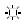
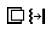
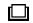
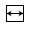

Table 2: Monitor Adjustment Icons
 | Brightness/ Contrast Controls |
 | Brightness |
 | Contrast |
 | Black Level (Analog input only) |
 | Auto Contrast (Analog input only) |
 | Auto Brightness (Analog input only) |
 | Auto adjust Image Position H.Size V.Size Fine Settings (Focus) |
 | Image Controls |
 | Left/Right |
 | Down/Up |
 | Horizontal Size, Vertical Size, (OSM Rotation Analog Input Only) |